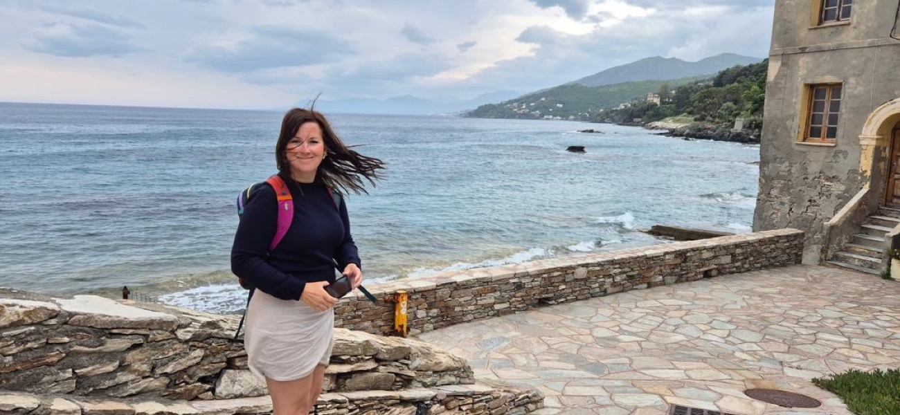

Originally from the Peak District. Now walking with people wherever they are.

Hi, I'm Sarah
I love being on my feet — moving through landscapes, through thoughts, and into deeper connection.
Walking has always brought me home to myself, to others, and to what truly matters. Nature and movement have transformed my own life, and I believe they can do the same for you.
Originally from the rolling hills of the Peak District in the UK, I hold a Master's in New Media and Society and a PGCE in teaching. Over the years, I've worked across cultures, industries, and sectors, driven by a deep desire to contribute to meaningful change and community.
Today, I guide individuals toward healing, growth, and resilience — combining evidence-based coaching with the wisdom of the natural world.
— Sarah
Ready to begin?